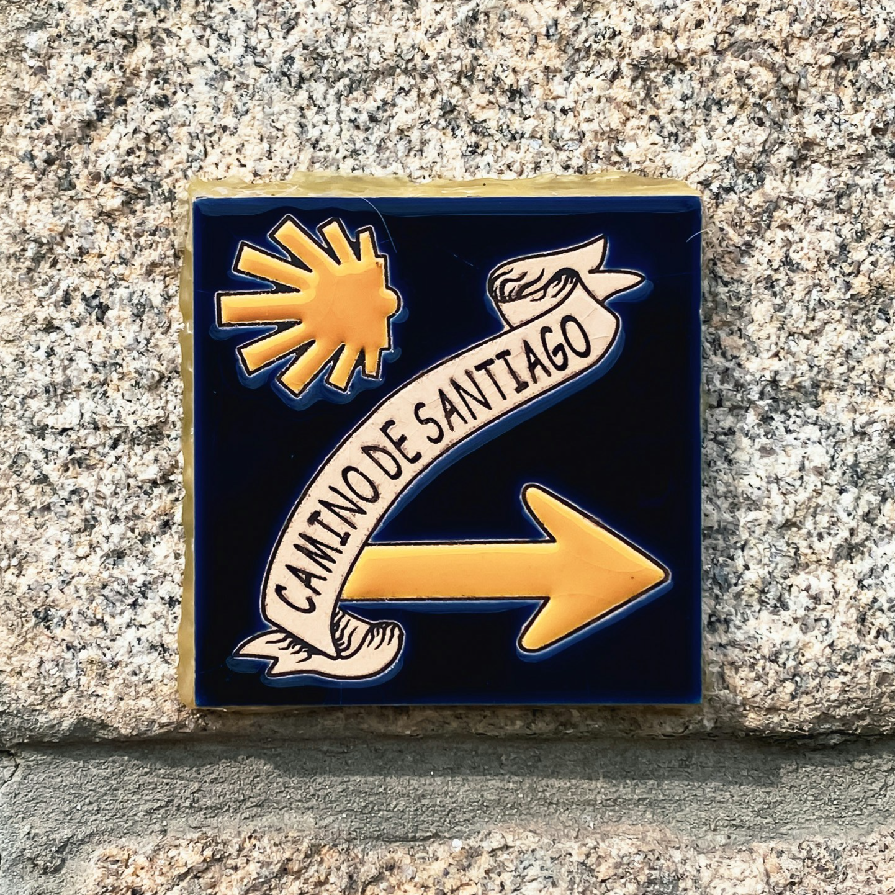

Welcome
About the workshop
Organizers
Committe
ArgNLE
The First Workshop on Natural Language Argument-Based Explanations
Co-located with ECAI 2024. 19-24 October 2025, Santiago de Compostela.

Content & Topics
Learn more
Organizers
Rodrigo Agerri
HiTZ Center - Ixa, University of the Basque Country UPV/EHU, Spain
Elena Cabrio
Université Côte d’Azur, Inria, CNRS, I3S, France
elena.cabrio@univ-cotedazur.fr
Marcin Lewinski
IFILNOVA, Universidade Nova de Lisboa, Portugal
m.lewinski@fcsh.unl.pt
Bernardo Magnini
Fondazione Bruno Kessler, Italy
magnini@fbk.eu
Marie-Francine Moens
KU Leuven, Belgium
sien.moens@kuleuven.be
Serena Villata
Université Côte d’Azur, Inria, CNRS, I3S, France
villata@i3s.unice.fr
Committee
Aitziber Atutxa - HiTZ Center - Ixa, University of the Basque Country UPV/EHU, Spain
Maite Oronoz - HiTZ Center - Ixa, University of the Basque Country UPV/EHU, Spain
German Rigau - HiTZ Center - Ixa, University of the Basque Country UPV/EHU, Spain
Petar Bodlović - IFILNOVA, Universidade Nova de Lisboa, Portugal
Fabrizio Macagno - IFILNOVA, Universidade Nova de Lisboa, Portugal
Maria Grazia Rossi - IFILNOVA, Universidade Nova de Lisboa, Portugal
Benjamin Molinet - Université Côte d’Azur, Inria, CNRS, I3S, France
Theo Alkibiades Collias - Université Côte d’Azur, Inria, CNRS, I3S, France
Alberto Lavelli - Fondazione Bruno Kessler, Italy/li>
Andrea Zaninello - Fondazione Bruno Kessler, Italy
Kanimozhi Uma - KU Leuven, Belgium
Wei Sun - KU Leuven, Belgium